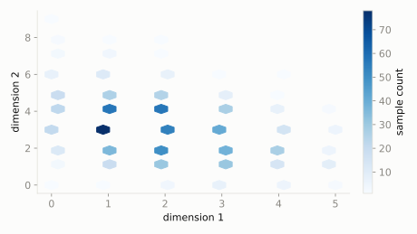

A spinner has three colors -- red (20% chance), blue (30%), green (50%). A kid spins it 10 times.
What's the chance they get exactly 2 reds, 3 blues, and 5 greens?
scipy.stats.multinomial
Binomial generalized from two outcomes to k outcomes: spin a weighted, multi-sided spinner n times and ask how many times each color came up. Binomial is just the k=2 special case.
| parameter | default used here | meaning |
|---|---|---|
n | 10 | number of trials |
p | [0.2, 0.3, 0.5] | probability of each of the k outcomes |
A spinner has three colors -- red (20% chance), blue (30%), green (50%). A kid spins it 10 times.
What's the chance they get exactly 2 reds, 3 blues, and 5 greens?
scipy.statsimport scipy.stats as stats
import numpy as np
dist = stats.multinomial(n=10, p=[0.2, 0.3, 0.5])
print('P(2 red, 3 blue, 5 green):', round(dist.pmf([2, 3, 5]), 4))